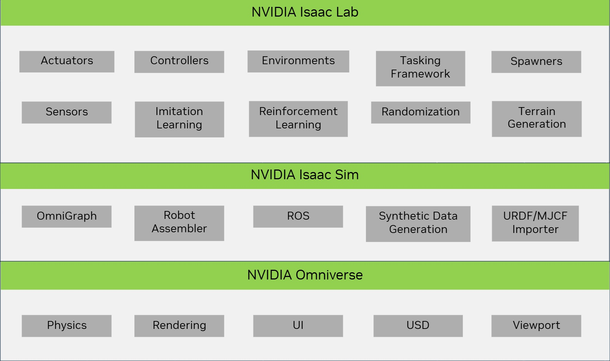
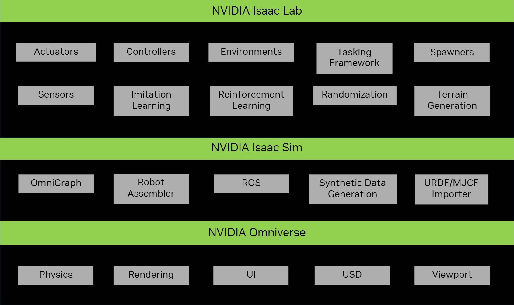

Isaac Lab 生态系统#
Isaac Lab 建立在 Isaac Sim 之上，利用最新的仿真技术提供了一个统一且灵活的机器人学习框架。它设计为模块化和可扩展的，旨在简化机器人研究中的常见工作流（例如强化学习、示范学习和运动规划）。虽然它包含一些预构建的环境、传感器和任务，但其主要目标是提供一个开源、统一且易于使用的接口，用于开发和测试自定义环境和机器人学习算法。
使用 Isaac Lab 需要安装 Isaac Sim，它包含了 Isaac Lab 所依赖的核心机器人工具，包括 URDF 和 MJCF 导入器、仿真管理器以及 ROS 功能。Isaac Sim 还基于 NVIDIA Omniverse 平台，利用了来自 PhysX 的高级物理仿真、逼真的渲染技术以及用于场景创建的 Universal Scene Description (USD)。
Isaac Lab 不仅继承了 Isaac Sim 的功能，还增加了许多与机器人学习研究相关的新特性。例如，包括在仿真中加入驱动器动态、程序性地形生成，以及支持从人类示范中收集数据。


Isaac Lab 在 Isaac 生态系统中处于什么位置？#
多年来，NVIDIA 开发了许多用于机器人和人工智能的工具。这些工具利用 GPU 的强大性能来加速仿真，不仅在速度上，还有在现实感上。它们在仿真技术领域展现出巨大的潜力，并且被全球许多研究人员和公司广泛使用。
Isaac Gym [MWG+21] 提供了一个基于 GPU 的高性能物理仿真用于机器人学习。它建立在 PhysX 之上，支持加速刚体模拟的 GPU 仿真，并提供一个 Python API 以直接访问物理仿真数据。通过端到端的 GPU 流水线，与基于 CPU 的物理引擎相比，可以实现更高的帧率。该工具已经在多个研究项目中成功应用，包括腿部运动 [RHRH22] [RHBH22]、手内操作 [HAM+22] [AML+22] 和工业组装 [NSA+22] 。
尽管 Isaac Gym 取得了成功，但它并不是为了成为一个通用的机器人仿真器而设计的。例如，它不包括可变形物体与刚性物体之间的交互、高保真渲染和对 ROS 的支持。该工具主要作为预览版发布，旨在展示底层物理引擎的能力。随着 Isaac Sim 的发布，NVIDIA 正在构建一个通用的机器人仿真器，并将 Isaac Gym 的功能集成到 Isaac Sim 中。
Isaac Sim 是一个基于 Omniverse 的机器人仿真工具包，Omniverse 是一个通用平台，旨在统一复杂的 3D 工作流。Isaac Sim 利用图形和物理仿真领域的最新进展，为机器人提供高保真的仿真环境。它支持 ROS/ROS2、各种传感器仿真、领域随机化工具以及合成数据创建。Isaac Sim 中的平铺渲染支持在环境中进行向量化渲染，并支持在云中运行，使用 Isaac Automator 。总体来说，它是一个强大的机器人工具，对于机器人学家来说，是机器人仿真领域的一大进步。
随着上述两个工具的发布，NVIDIA 还发布了一组开源的环境，名为 IsaacGymEnvs 和 OmniIsaacGymEnvs ，它们分别建立在 Isaac Gym 和 Isaac Sim 之上。这些环境旨在展示底层模拟器的能力，并提供一个起点，帮助理解使用这些模拟器进行机器人学习的可能性。这些环境可以用于基准测试，但并不适用于开发和测试自定义环境和算法。此时，Isaac Lab 扮演着重要角色。
Isaac Lab 建立在 Isaac Sim 之上，利用最新的仿真技术提供了一个统一且灵活的机器人学习框架。它设计为模块化和可扩展的，旨在简化机器人研究中的常见工作流（例如强化学习、示范学习和运动规划）。虽然它包含一些预构建的环境、传感器和任务，但其主要目标是提供一个开源、统一且易于使用的接口，用于开发和测试自定义环境和机器人学习算法。它不仅继承了 Isaac Sim 的功能，还增加了许多与机器人学习研究相关的新特性，例如在仿真中包含执行器动力学、程序化地形生成，以及支持从人类示范中收集数据。
Isaac Lab 替代了之前的 IsaacGymEnvs 、 OmniIsaacGymEnvs 和 Orbit 框架，并将成为 Isaac Sim 的单一机器人学习框架。先前发布的框架已被弃用，我们鼓励用户遵循我们的迁移指南，以便过渡到 Isaac Lab。
为什么我应该使用 Isaac Lab？#
由于 Isaac Sim 保持闭源，用户很难为该模拟器做出贡献，并构建一个共同的研究框架。在当前的路径上，我们看到使用该模拟器的社区将会自行开发各自的框架，这将导致分散的努力，并产生大量重复的工作。过去在其他模拟器中也发生过类似的情况，我们认为这不是作为一个社区前进的最佳方式。
Isaac Lab 提供了一个开源平台，供社区共同努力推动进展，致力于设计基准测试和机器人学习系统，作为一项联合倡议。这使我们能够重用现有组件和算法，并在彼此的工作基础上构建。这样做不仅节省了时间和精力，还让我们能够专注于研究中更重要的方面。我们希望 Isaac Lab 成为机器人学习研究的事实标准平台，以及一个利用 Isaac Sim 的环境 zoo 。随着框架的成熟，我们预见到它将从最新的仿真发展（作为 NVIDIA 和合作伙伴内部开发的一部分）以及机器人学研究中受益匪浅。
我们已经在与大学和研究机构的实验室合作，将他们的工作整合到 Isaac Lab 中，并希望社区中的其他人也能加入我们这一努力。如果您有兴趣为 Isaac Lab 做出贡献，请与我们联系。